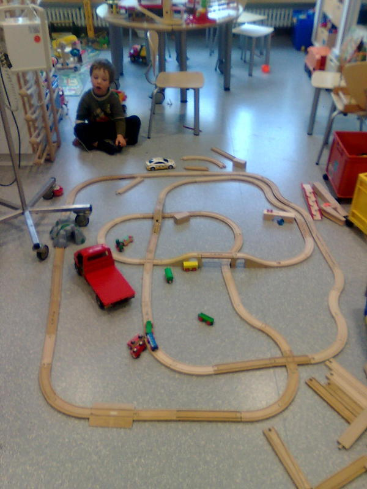

frisur.
Wir haben Moritz gestern zum ersten mal die Haare geschnitten. Also nicht vollständig, nur mal schnell die Stirnfransen gekürzt, aber das war leider überfällig weil ihm die inzwischen in die Augen hingen. Und nachdem die Augen immer wieder wg Erkältung latent entzündet waren wars sicher besser da eine Quelle für Reizung zu reduzieren.
Also einen Kamm hingehalten und mit der Schere rübergeschnitten ..
Leider hab ich mich dabei um ein oder zwei Zentimeter verschätzt und er sieht jetzt ein bissl doof aus, weil ich zu weit oben abgeschnitten hab .. irgendwie Mönch-mäßig (wenn auch die Tonsur fehlt).
Naja gottseidank wachsen die wieder schnell nach und er selber merkts ja nicht.
saft.
Eine Beispielszene für unser harmonisches Leben zu Hause:
Frederik findet im Kühlschrank so einen Fruchtsaft mit Fruchtstücken drin (Pfirsich-Mango) und erklärt, Moritz und er möchten die beiden Flaschen, die da sind, haben. Wir erklären ihm darauf, dass sie sich die eine Flasche teilen sollen, die andre Flasche möchten sich nämlich Mama und Papa teilen. (Wir tun das grade manchmal ganz bewusst, weil dieses Thema "ich will aber ein ganzes, kein halbes" bzw "ich will aber mehr" undsoweiter immer wieder kommt.)
Er meinte nein, er will eine ganze Flasche.
Wir teilen ihm mit, dass er eine halbe Flasche haben kann oder gar keine. Ausserdem giessen wir dem Moritz die Hälfte der Flasche in eine Trinkflasche und er beginnt begeistert zu trinken.
Frederik heult daraufhin los wie ein Schlosshund, rotes Gesicht, kullernde Tränen, fliessender Rotz, alles.
Nach einer Weile (1-2 Minuten) beruhigt er sich wieder und entschliesst sich doch, aus der halbvollen Flasche zu trinken. Nach einem ganz kleinen Schluck stellt er sie weg und sagt "das schmeckt mir gar nicht!"
Na dann ..
film.
Also jetzt kein Video, das wir von den Kindern aufgenommen haben, sondern eine Frederik-Bedienungsanleitung, falls mans mal braucht:
Also wenn Frederik sagt, er will das Video sehen, wo ein weisses Auto stehen bleibt weil es Angst hat und dann fährt ein LKW vorbei, dann meint er das, das sich hinter diesem Link verbirgt (kann ich leider nicht hier einbauen) (die Szene, die er meint, kommt ab etwa 1:30).
Und wenn er sagt, er will das Video sehen, wo ein Auto ein Rad verloren hat, dann meint er das. (die Szene, die er meint, kommt bei ca 2:43)
mama/papa.
Meine Freude im vorigen Beitrag darüber, endlich mit "Papa" angesprochen zu werden war wohl etwas zu früh bzw zu einfach gedacht.
Jetzt heisst nämlich auch Susanne "Papa", und Denise (Quentins und Linus' Mama) wurde gestern auch mit "Papa" angesprochen. "Mama" ist scheints derzeit für "das will ich haben" reserviert.
Wir müssen das wohl noch üben ..
moritzworte.
Folgende Wörter gibt Moritz nun plötzlich von sich
- "Uuh!" zeigt auf Schuhe
- "Papa!" (darüber freu ich mich besonders, ich heiss jetzt nicht mehr "Mama")
- "das", wahlweise "das da" zeigt auf etwas, das er haben will
ausserdem nickt er mit dem Kopf oder schüttelt ihn für "ja" oder "nein".
Ich bild mir grad ein dass da noch mehr waren aber sie fallen mir nicht ein .. wenn mein Hirn wieder funktioniert füg ich also vielleicht noch was hinzu.
monster.
Neulich in der früh wachte Frederik auf und erklärte:
Frederik - kleine Monster haben meine Baustelle umgeworfen
Susanne - was für Monster denn?
Frederik - blaue!
Ob das damit zusammenhängt, dass Moritz' Pyjama blau war wissen wir nicht.
hilfsbereit.
Szene gestern:
Ich sitze grade im Bad, Susanne ist nicht da und deswegen versuch ich grad allein auf die Kinder aufzupassen. Frederik und Moritz sind im Schlafzimmer und spielen auf dem Strassen-Teppich und es ist ruhig.
Plötzlich sehe ich Moritz an der Badezimmer-Tür vorbeigehn, in Richtung Küche. Zerst hab ich gedacht er sucht mich, dann dass er in der Küche was anstellen will (den einen Schrank aufmachen, den er nicht aufmachen soll, den Geschirrspüler ausräumen oder irgendsowas), also rufe ich ihn. Er reagiert nicht.
Kurze Zeit später seh ich ihn in die andre Richtung wieder vorbeigehn, mit einem Putz-Fetzen in der Hand. Ich geh ihm also nach ins Schlafzimmer, wo wir Frederik vorfinden, der sich wohl mit einem Fläschchen die Strumpfhose nass-geschüttet hat. Moritz geht grad auf ihn zu und hält ihm den Putz-Fetzen hin.
Auch sonst bringt er uns ständig irgendwas, von dem er denkt dass wirs grad brauchen könnten (meistens ziemlich gut geraten, manchmal aber auch falsch, aber das liegt dann daran dass wir nicht das möchten, was wir seiner Meinung grad möchten sollen, rausgehn zum Beispiel).
bobbycar2.
Kleiner Nachtrag:
Das New Bobby Car von BIG hat auch das Problem mit den sich lösenden Aufklebern ..
martin.
Derzeit ist ja die Zeit von Martins-Umzügen, und natürlich finden Kinder das ganz toll und wird das von Kindergärten usw auch sehr schön gemacht. So auch bei Frederik. Im Kindergarten wurde eine Laterne gebastelt und am Donnerstag Abend war dann eben Umzug.
Die Laterne war zwar so konstruiert, dass man eine Kerze reintun kann, aber es gibt da ja auch diese fertigen Laternenstäbe, die man in diversen Geschäften für ein paar EUR kaufen kann .. Da ist dann im Griff hinten eine Batterie drin oder zwei, dann läuft ein Kabel durch den hohlen Stab nach vorne, da befindet sich dann ein Haken (an dem die Laterne befestigt wird) und an einem Kabel baumelt eine Glühbirne in die Laterne runter.
So weit so eine gute Idee, eigentlich.
Wenn, ja wenn nicht unter diesem Mantel der größte Schrott verkauft würde, den ich je gesehen hätte.
Ich mein, wir haben jetzt drei verschiedene Erzeugnisse hier liegen, und die sind alle Mist. Jede Taschenlampe, die ich in den späten 80ern von der Sparkasse zum Weltspartag geschenkt bekommen hab ist weniger schrottig. Zum verzweifeln.
Was ich meine?
- wenn man die Glühbirne vorne drin auch nur schief anschaut geht das Ding aus. Wackelkontakt zwischen Birnenfassung und Kabel (bei allen die ich getestet hab)
- der Schalter hat schon nach dem zweiten Schaltvorgang Wackelkontakte, i.e. man muss dann sehr vorsichtig den korrekten Schaltpunkt finden damit Licht rauskommt statt Dunkelheit (einfach den Schalter ans Ende drücken geht dann nicht mehr). Ist auch nur so ein Metallstreifen, der in dem Plastikgriff drin verschoben wird und dadurch einen Kontakt herstellt ..
- Einer von den gekauften Stäben war bereits beim ersten Auspacken kaputt und ging überhaupt gar nie.
Und für sowas soll man ca EUR 3 bezahlen? Ehrlich? Ich find das eine Frechheit.
geschenksbringer.
Zwei Begebenheiten aus der jüngeren Vergangenheit:
Frederik hat ein Spielzeug, mit dem er oft und gerne spielt, das sind so magnetische Kugeln und Stäbe, aus denen man Dinge bauen kann. Bevor jetzt jemand Geomag ruft, nein, nicht das, sondern viel größere Kugeln und Stäbe (so richtig Kleinkindtauglich, i.e. nicht verschluckbar). Jedenfalls haben wir da das Problem, dass Moritz die Dinger dann auch immer haben will. Daher entspannte sich neulich folgender Dialog:
Susanne - Ja dann wird das Christkind eben dem Moritz auch sowas bringen müssen
Frederik - Das Christkind bringt dem Moritz eins und mir eins!
Susanne - das sind aber langsam ganz schön viele Wünsche, die du da hast, so viel kann das Christkind doch gar nicht tragen!
Frederik - streckt die Arme zur Seite raus das Christkind hat doch zwei Arme!
Ja ..
und dann gabs heut noch was: Wir haben in der Wohnung unter uns, die niemand bewohnt, einen Raum zusätzlich als Abstellraum gemietet (Fahrräder, Kinderwagen, Akten, Ski, Reisekoffer, Zelt .. Zeug halt). Susanne war heute vormittag runter gegangen um was zu suchen bei den Unterlagen und auch um was wegzubringen. Moritz schlief gerade. Frederik fragte mich, wo denn die Mama sei. Ich, grade am Küche saubermachen, sage ihm also "die ist unten". Frederik ging aus der Küche, ich dachte ins Wohnzimmer. Kurze Zeit später kam er wieder und meinte "ich war unten, ich hab sie nicht gesehn!"
Also hab ich noch dazugesagt, sie sei "im Zimmer, unten". Frederik darauf "ah so, ich geh nochmal runter".
Unten kam er dann ins Zimmer rein. Dann sah er im Regal, zwischen meinem Werkzeug, einen Meterstab (der Deutsche sagt dazu wohl "Zollstock" .. seit wann benutzen wir eigentlich "Meter" als Einheit? Ist schon eine Weile, oder?). Den nahm er aus dem Regal und rief "Oh, der Nikolaus hat mir einen neuen gebracht!" (er hat irgendwann, vor .. mehr als einem halben Jahr schätz ich, meinen alten Meterstab zerbrochen, weil er das mit dem auseinanderklappen noch nicht ganz verstand dort .. den hatte er wohl auch als seinen interpretiert).
Ausserdem heute, unabhängig von Geschenken, folgender Dialog am Abend:
Frederik - nimmt Susannes Handy in die Hand ich will den Onkel Bile anrufen
ich - was willst du ihm denn sagen?
Frederik - hallo
ich - ah
ich - wähle die Nummer und rufe an
Bile - ja hallo?
Frederik - Stille
Frederik - Hallo.
Bile - Pause Frederik?
Frederik - Stille
ich - nehme das Handy, erkläre die Situation, bespreche Zeug, verabschiede mich, lege auf
Frederik - ich will ihm noch was sagen!
ich - was denn?
Frederik - Tschüss
ich - ah, ahso wähle nochmal
Bile - ja?
Frederik - Tschüss gibt mir das Handy wieder
ich - äh .. ja, der Frederik wollte noch tschüss sagen
das mit den Inhalten beim telefonieren üben wir noch ..
puppentheater.
Neulich war ich mit Frederik (eigentlich sollte Susanne mit ihm gehn, es hat sich dann aber anders ergeben) in Neu-Ulm im Puppentheater Topolino, wo wir uns das Stück "Freunde" angeschaut haben (ein Dank hier an Denise, die die Idee hatte und auch die Karten organisiert hat undsoweiter).
Zuerst mal ist zu sagen, dass sowohl das Stück als auch die Aufführung sehr nett gemacht sind und dass es Frederik (und den anderen anwesenden Kindern) sehr gut gefallen zu haben scheint.
Was ich selber daran faszinierend fand: Wenn man naiv über ein Puppentheater nachdenkt, dann denkt man sich halt dass entweder immer ein Operateur je eine Puppe bedient, oder, wenn die Kontrollmöglichkeiten kleiner sind, vielleicht jeder je zwei oder so.
Das ist aber mitnichten der Fall.
Hier sind zwei Personen am Werk, die gemeinsam drei Puppen bedienen. Dabei läuft das meistens so ab, dass jeder eine Puppe fix bedient, die dritte Puppe wird von beiden gemeinsam und/oder abwechselnd bedient. Wobei die Sprech-Rollen nicht notwendigerweise mit den Bediener-Rollen zusammefallen. I.e. die Frau hat sowohl die Maus als auch das Schwein gesprochen, der Mann nur den Hahn, wobei aber immer wieder der Mann auch das Schwein bedient hat, teilweise aber auch die Frau das Schwein bedient hat, manchmal aber auch beide einen Teil des Schweins bedient haben (der Mann hat immer den Hahn bedient und die Frau immer die Maus, wenn ich mich recht erinnere).
Jedenfalls ist das von der dahinterstehenden Planungs- und Koordinationsleistung durchaus komplexer als man sich das naiv so vorstellt.
zug.
Wir sind derzeit grad bei meinen Eltern in Innsbruck, und Frederik hat eigentlich dauerhaft genau einen Wunsch: "Opa, ich will mit dir Eisenbahn spielen!"
Das ist die Strecke, die die beiden aufgebaut haben:

bobbycar2.
In dem Eintrag von gestern (siehe hier) hatte ich ja geschrieben, ich würde noch einen nachreichen, wo ich was über die zwei verschiedenen Dinger schreibe.
Frederiks Bobbycar ist von der Firma Rolly Toys (wow, die Webseite stammt ja direkt aus dem Jahr 1998 oder so), und dort aus der Serie "rollyMinitrac" (ansonsten stellen die auch diese coolen Traktoren zum Treten her). Da gibts eine ganze Serie "licensed products", i.e. Bobbycars (die nicht Bobbycars heissen dürfen, vermute ich mal, weil das ein Markenname der Firma BIG (s.u.) ist), die grossen Fahrzeugen real existierender Firmen nachempfunden sind. In dem Fall ist das ein CAT (Caterpillar) Dumper (i.e. so ein Mini-Kipper).
Was man zu dem Ding sagen kann:
- Aussehen: verdammt cool, sieht richtig Baustellenmäßig aus mit korrekten CAT-Aufklebern und schöner Farbe
- Die Räder sind leise, i.e. problemlos in der Wohnung nutzbar ohne dass viel Lärm erzeugt wird. Nichtsdestoweniger scheinen die Räder auch Nutzung im Freien (i.e. auf Asphalt) gut auszuhalten, sind nicht abgefahren obwohl wir viel damit draussen waren.
- Die Aufkleber halten nicht besonders gut, also nach einem halben Jahr oder so gehen die entweder selber ab oder sind vom Kind abgezogen worden. Da wärs uU besser die Dekoration wäre auflackiert
- Die Mulde des Kippers könnte eine Spur tiefer sein oder mit steilerem Rand, dann könnte man besser Dinge drin transportieren, ohne dass sie rausrollen
- Unter der Kipper-Mulde (die korrekt aufklappbar ist) findet sich noch ein kleines Gepäckfach. Wirklich was reinpassen tut dort aber nicht.
Das Gerät, mit dem Moritz sich fortbewegt, ist ein Original BIG New Bobby Car, das wohl einige der Probleme, die das klassische Bobby Car (weiterhin erhältlich als Bobby Car Classic) hatte behebt. vA insofern als dass jetzt auch beim Bobby Car (wie beim oben beschriebenen Rolly Toys) die Form des Sitzes ergonomisch günstig ist und eine korrekte Hüft-Stellung beim Fahrer erzeugt, das war wohl früher nicht so. Hier also auch eine Punkte-Liste:
- leicht abgeflachte, sportliche Auto-Form
- Flüsterräder (so nennt der Hersteller das) jetzt auch serienmäßig
- Sitzposition etwas niedriger als beim Rolly Toys-Gerät, Moritz tut sich bei dem hier definitiv leichter. Andererseits wirds dadurch früher zu klein
- Wendekreis kleiner als beim Rolly Toys, i.e. besser geeignet für in der Wohnung (Frederik muss mit dem Dumper immer wieder mal die Vorderräder anheben um die Kurve zu kriegen, oder halt reversieren)
- Original BIG-Zuberhör nutzbar (zB die Schubstange, über die ich grad wieder nachdenke, die passt beim Dumper natürlich nicht)
Zum Schluss noch ein Verweis auf das wichtigste Zubehörteil von allen, ohne das es gar nicht geht (und das nicht vom konkret verwendeten Fahrzeug abhängt, i.e. kann man so oder so kaufen): Die Schuh-Schoner, ohne die sind die Schuhe nämlich schon nach einem Nachmittag auf Asphalt vollständig durch (die Fahrbewegung ist nämlich Füsse aufstellen, anschieben, Füsse wieder vorziehen, wobei dabei die Schuh-Oberseite über den Asphalt schleift).
bobbycar1.
Wir haben ja derzeit zwei Bobby Cars, nämlich erstens den hier:

und zweitens den hier:

(das ist ein ziemlich altes Bild von Frederik)
In diesem Beitrag möcht ich ein bissl was drüber schreiben, warum wir uns dafür entschieden haben, einen zweiten zu kaufen (nachdem das im Bekannten-Kreis nicht überall auf Verständnis gestossen ist denke ich da gibts Erläuterungsbedarf). In einem späteren Beitrag möcht ich dann auch noch was über die zwei verschiedenen Fabrikate schreiben.
Ja jedenfalls haben wir uns das so gedacht:
- Den gelben Bagger-Bobbycar haben wir dem Frederik damals zum Geburtstag geschenkt. i.e. der gehört ihm. Wir können schlecht von ihm verlangen, etwas das wir ihm geschenkt haben, herzugeben. Er kann sich später mal überlegen, dass ers hergeben will weil ers nimmer braucht, aber verlangen können wir das auf keinen Fall. Schon gar nicht ein Ding, das er noch benutzt.
- Genauso haben wir uns eben deswegen, weil er ihn noch benutzt, und weil wir uns gut vorstellen konnten, dass das was ist, was sie gemeinsam machen können, gedacht dass es definitiv Vorteile hätte, zwei Bobbycars zu haben. Hat sich bewahrheitet, sie haben grossen Spass, hintereinander herzufahren.
- Schliesslich gings halt auch darum, für Moritz auch den "hab ich geschenkt bekommen"-Effekt zu erzeugen.
Das einzige Problem ist jetzt manchmal, dass entweder beide das rote oder beide das gelbe benutzen wollen. Regelt sich aber meistens wieder.
fürsorge.
Moritz ist sehr fürsorglich, was Frederik betrifft. Also umgekehrt schon teilweise auch (wobei das dann eher in Richtung "Mama, der Moritz macht was!" geht). Aber hier gehts jetz um die paradoxe Richtung.
Mal abgesehn von so Dingen wie "ai ai" machen, wenn Frederik sich weh getan hat (wobei Moritz noch leichte Probleme mit der Dosierung der Handbewegung hat) bringt Moritz auch immer Frederiks Schuhe, wenn wir rausgehn wollen.
Vorgestern (oder so) jedoch für mich der bisherige Höhepunkt: Frederik soll gewickelt werden (ja, das ist schön langsam ein Problem) und liegt bereits ausgezogen da. Eine kurze Unterbrechung nützt Moritz sofort und versucht Frederik die neue, saubere Windel anzulegen. Hat er natürlich nicht geschafft (vA weil Frederik nicht mitgeholfen hat), aber er hats definitiv versucht.
Derzeitige Lieblingsmeldung von Frederik übrigens: "Mama, der Moritz is gelaufen!"
design.
So, ich hab jetzt mal ein bissl schönere Farben und am rechten Rand so einen Info-Navigations-Dings hingetan. Hoffe es gefällt.
laufbeweis.
Um die Lauf-Sache noch mal genauer zu beweisen bzw ein Video nachzuliefern, hier eine Kurz-Dokumentation von Moritz' Fortschritten:
stillen.
Nur damit das dokumentiert ist, seit ca zwei Wochen wird Moritz auch nachts nicht mehr gestillt. Er wollte einfach plötzlich nicht mehr und ist jetzt mit einem Wasserfläschchen zufrieden. Ausserdem schläft er in seinem eigenen Bett.
Letzteres müsste jetzt nur noch bei Frederik auch konstant funktionieren, dann wärs ganz super ..
bilder.
Es gibt wieder neue Bilder. Wie gehabt einfach auf das Vorschaubild klicken um dorthin zu gelangen, die neuen sind im "Oktober 2010"-Ordner.

zitate.
Ein paar kleine Probestücke aus dem Alltag.
Heute war Susanne einkaufen und hat für die zwei Burschen so kleine viertel-Liter Tetrapacks mit Apfelsaft gekauft, die mit den kurzen Strohhalmen zum bei einem mit Alufolie verschlossenen Loch reinstecken wie sie vermutlich die meisten von früher kennen ("Sunkist" war glaub ich eine Marke früher wo so verkauft wurde). Jedenfalls, wers kennt weiss auch, dass nachdem man kräftig am Strohhalm gesaugt hat und wieder abgesetzt hat, Luft durch den Strohhalm zurück in die Packung strömt und weil der Strohhalm natürlich in der Flüssigkeit steckt gibt das so ein gurgelnd-schlürfendes Geräusch.
Frederik meinte dazu heute "Mama, der Saft ürpst!"
Ich hab ihn heut, wie oft ins Bett gebracht. Dabei entspannte sich folgender Dialog:
Frederik - ich will noch was trinken
ich - reiche ihm die Flasche
Frederik - nicht die Flasche, aus einem Glas!
ich - nein, wir gehn jetzt nicht mehr in die Küche
Frederik - ich will aber nicht ins Bett, ich will nicht schlafen!
ich - warum denn nicht?
Frederik - das is halt so.

furchtlos.
Hier mal noch eine kleine filmische Illustration der Tatsache, dass Moritz deutlich weniger Angst hat, als manchmal gut für ihn wäre.
Zusätzlicher Bericht: Moritz übt ja derzeit freies Stehen. Er ist draufgekommen, dass er besonders viele Reaktionen erntet, wenn er das oben auf der Rutschbahn macht. I.e. er klettert da rauf, richtet sich oben auf und lässt dann das Geländer los (Arme in die Höhe). Grinsend.
UPDATE
was ich noch erläutern sollte, das "bumm!" das man im Video hören kann ist Moritz' Reaktion auf so ziemlich alle Unfälle, die nicht zu Weinen führen, i.e. seiner Meinung nach nicht so schlimm sind.
dialog.
Gestern abends waren Frederik und ich noch unterwegs (er auf dem Laufrad, ich zu Fuß), um ihm Winterschuhe zu kaufen. Das wäre halbwegs schnell gegangen, wenn er nicht alle 5-10 Meter stehen bleiben würde, um irgendwas anzuschauen und zu kommentieren, und auf dem Rückweg musste ich ihn dann eh tragen (und das Laufrad und die neuen Schuhe .. juhu!).
Jedenfalls relativ am Anfang unseres Weges trug sich folgende Begebenheit zu (wir gingen grade am Gerichtsgebäude vorbei):
Frederik - ist das eine Kirche?
ich - nein.
Frederik - ist das eine Ritterburg?
ich - nein.
Frederik - was ist das?
ich - ein Gericht.
Frederik - ah.
UPDATE
so, dieser Eintrag wurde jetzt ungefähr viermal geändert, bevor er korrekt
war. Das mit dem schönen Wiedergeben von Dialogen musste ich erst rausfinden,
wie's gscheit aussieht. Entschuldigung für die Unannehmlichkeiten ..
zug

UPDATE
das war ein Versuch, ein Foto vom Handy aus zu posten. Es handelt sich dabei um ein Bild aus dem Spielzimmer in der Kinderklinik, von Frederiks Aufenthalt dort, mit dem ich unsere schöne Bahnstrecke dokumentiert habe.
UPDATE
ich hab das Bild mal noch auf eine etwas zivilere Größe eingedampft.
reden.
Frederik war ja eigentlich bis .. Ende August und davor immer ein sehr ruhiges Kind, das wenig (oft zu wenig) geredet hat. Besonders ist das aufgefallen bei so Dingen wie den ärztlichen Untersuchungen, wo uA der Entwicklungsstand festgestellt werden soll, wo er kein Wort gesagt hat. Nur bös geschaut. Auf jede Frage noch mehr. Am Ende hat er, gottseidank noch während der Arzt im Raum war, zu mir gesagt "ich hab den Mund gar nicht aufgemacht!" Na war immerhin das geklärt.
Ja und jetzt, seit er im Kindergarten ist, hört er plötzlich überhaupt nicht mehr auf mit reden. Die ganze Zeit. Wobei er sehr hartnäckig ist, man muss jeden Satz mit "ja" oder ähnlich quittieren, und solang man das nicht tut wiederholt er ihn einfach immer wieder. Also quasi wie ein Netzwerk-Protokoll (die funktionieren oft ähnlich).
Teilweise erzählt er da auch völligen Stuss, was ihm selber auch bewusst ist. Letzte Woche hat er jeden Tag behauptet, er hätte im Kindergarten "Pommes" gegessen. Wir haben nicht angenommen, dass das stimmt, aber ganz sicher konnten wir uns sein als er eines morgens während dem hinbringen verkündete "nachher werd ich sagen, ich hab Pommes gegessen". Ah. Na gut.
Moritz hat auch relativ plötzlich angefangen, unterschiedlichere Laute von sich zu geben als das bis jetzt der Fall war, so zB eben sein Versuch "Kastanie" zu sagen und so.
gehen. [update]
Gestern (am 01.10.2010) hab ich selber definitiv gesehn, dass Moritz 2-3 Schritte weit gegangen ist, und zwar absichtlich. Direkt von Susannes Armen in meine gestolpert!
Er hat das leicht seitlich getan, weil er mit einer Hand noch Susannes Hand festgehalten hat (wodurch sich die andre Seite weiter vor bewegt hat als die festhaltende) und dann in der Körperhaltung vorwärts getappst ist. Er selber fand das ganz toll und super.
Wir natürlich auch.
UPDATE Korrektur: nicht 2-3 Schritte sondern mindestens 6-7, erinnert mich Susanne grade.